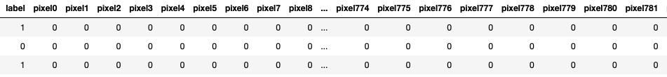
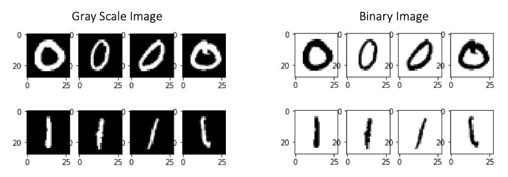
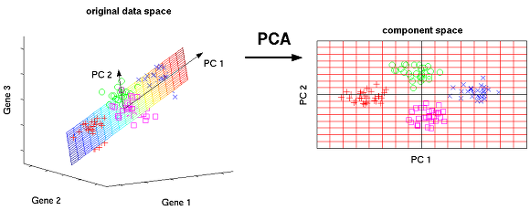
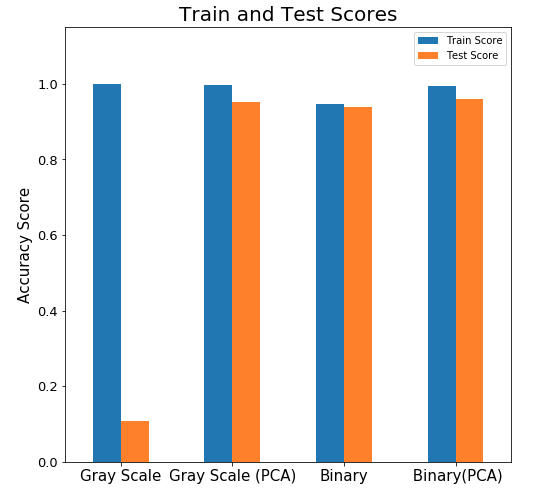
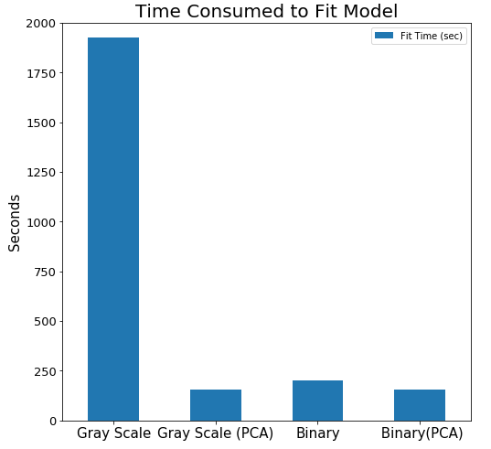
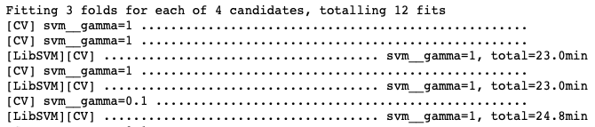
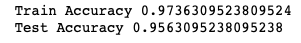

Classifying Digit Images
Introduction
Image processing is a method to perform some operations on an image, in order to get an enhanced image or to extract some useful information from it. In machine learning, the images are converted into pixels in order to extract common characteristics of pixels to classify the similar image. The dataset from Kaggle contained the pixel values of the 42000 digit images and the correct labels. The goal of this project is to correctly identify digits from a dataset of tens of thousands of handwritten images using data science techniques and computer vision fundamentals.
Obtaining the Data

This classic dataset of handwritten images was released in 1999 by Modified National Institute of Standards and Technology (MNIST) in order to let the public learn computer vision fundamentals and benchmark classification algorithms. In this Kaggle competition, the goal is to correctly identify digits from a dataset of tens of thousands of handwritten images using different machine learning algorithms and compete with the best performing models. The dataset has 42000 rows and 785 columns including the true labels. Each image is 28 pixels in height and 28 pixels in width, for a total of 784 pixels in total. The image above shows the different handwritten images of each digit.
Grayscale vs Binary

Images are composed of pixels and it can be represented multiple ways such as grayscale and binary. Binary Image, also known as bi-level or two level image, represent every pixel value either 0 or 1 (black or white). Grayscale images represent every pixel by 8 bits where the pixel can have any value between 0 to 255 (shade of gray varying between black and white). There are advantages and disadvantages of using two different types of image. A grayscale image can be more computationally expensive, but it might produce better accuracy. On the other hand, a binary image is computationally less expensive than grayscale, but it might produce less accurate accuracy.
Principal Component Analysis

Principal Component Analysis (PCA) is a statistical method of reducing the dimension using orthogonal transformation. Essentially, PCA finds the linear combination of current pixels and creates new principal components that explain the maximum possible amount of variance in the pixels. After applying the PCA method to the columns of pixels, the result showed that 222 components can keep the 90% of the information.
Compare Score and Time

Using support vector classifier, I fitted models with four different data: Grayscale, Grayscale with PCA, Binary and Binary with PCA. The worst model was the grayscale model producing 0.12 test accuracy. The other three models performed about the same producing 0.94 to 0.99 train accuracy and 0.93 to 0.95 test accuracy.

Since the three models (Grayscale with PCA, Binary and Binary with PCA) have a similar train and test scores, I decided to look at the time consumed to fit the models. The graph above shows the time consumed to fit support vector classifier model. The PCA models tend to be faster in fitted time which is one of the advantages of using PCA. The grayscale with PCA took 156 seconds and binary with PCA took 155 seconds. After comparing both train/test scores and fitting time, the best model was the support vector classifier using binary images with PCA processing.
Tuning the Models

A support vector classifier uses the algorithm to find a margin that best separates the groups by creating another dimension to separate the data points. The distance of how far the additional dimension is created is the gamma parameter. Trying different gamma (distance) might help to increase the accuracy of the model. So, I used a grid search to search the best gamma parameter and cross-validate the model. The grid search result shows that the Support Vector Classifier model with the gamma of 0.001 performed the best.
Conclusion

In conclusion, I was able to obtain the data from Kaggle and use preprocessing methods such as Standard Scaler and Principal Component Analysis in order to build the best performing classification model. The best model was the support vector classifier model that produced train accuracy of 0.974 and test accuracy of 0.956. The best parameters were
- Standard Scaler (Scale)
- Principal Component Analysis (222 components)
- Support Vector Classifier (C = 1, gamma = 0.001)
For more detail analysis and code, Check out my Github